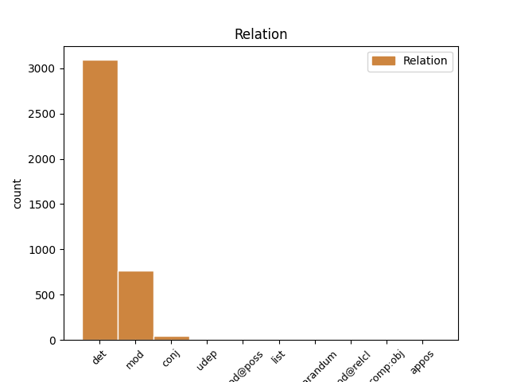
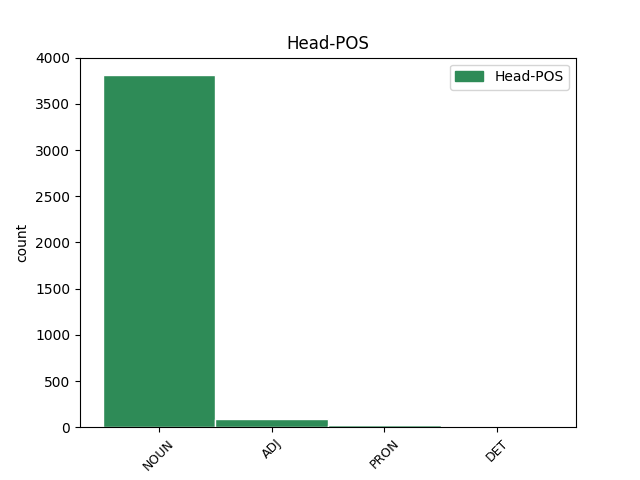
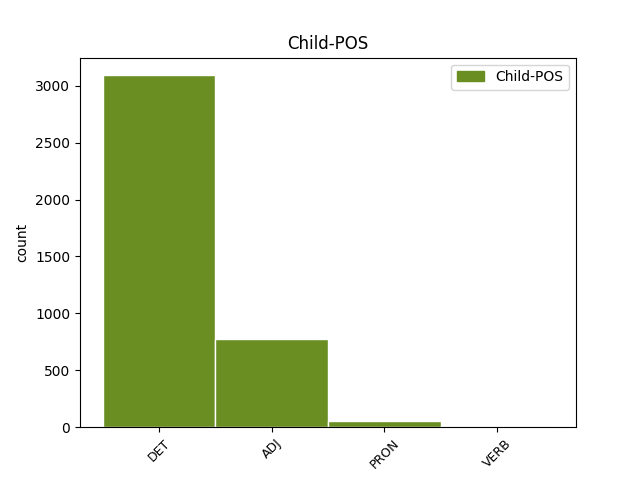

Distribution of features within this leaf



Agreement Rules sorted by frequency.
When the dependent token is None
1 - _ _ _ _ 0 _ _ _
2 Frifindelsen _ _ _ _ 0 _ _ _
3 er _ _ _ _ 0 _ _ _
4 på _ _ _ _ 0 _ _ _
5 ingen _ _ _ _ 0 _ _ _
6 måde _ _ _ _ 0 _ _ _
7 en en DET _ Gender=Com|Number=Sing|PronType=Ind 8 det _ _
8 blåstempling blåstempling NOUN _ Definite=Ind|Gender=Com|Number=Sing 0 _ _ _
9 af _ _ _ _ 0 _ _ _
10 , _ _ _ _ 0 _ _ _
11 at _ _ _ _ 0 _ _ _
12 de _ _ _ _ 0 _ _ _
13 har _ _ _ _ 0 _ _ _
14 varetaget _ _ _ _ 0 _ _ _
15 deres _ _ _ _ 0 _ _ _
16 bestyrelsesarbejde _ _ _ _ 0 _ _ _
17 på _ _ _ _ 0 _ _ _
18 forbilledlig _ _ _ _ 0 _ _ _
19 vis _ _ _ _ 0 _ _ _
20 - _ _ _ _ 0 _ _ _
21 det _ _ _ _ 0 _ _ _
22 er _ _ _ _ 0 _ _ _
23 langt _ _ _ _ 0 _ _ _
24 fra _ _ _ _ 0 _ _ _
25 tilfældet _ _ _ _ 0 _ _ _
26 , _ _ _ _ 0 _ _ _
27 indskød _ _ _ _ 0 _ _ _
28 dommeren _ _ _ _ 0 _ _ _
29 under _ _ _ _ 0 _ _ _
30 sine _ _ _ _ 0 _ _ _
31 bemærkninger _ _ _ _ 0 _ _ _
32 til _ _ _ _ 0 _ _ _
33 dommen _ _ _ _ 0 _ _ _
34 . _ _ _ _ 0 _ _ _
When the dependent token is None
1 - _ _ _ _ 0 _ _ _
2 Frifindelsen _ _ _ _ 0 _ _ _
3 er _ _ _ _ 0 _ _ _
4 på _ _ _ _ 0 _ _ _
5 ingen _ _ _ _ 0 _ _ _
6 måde _ _ _ _ 0 _ _ _
7 en _ _ _ _ 0 _ _ _
8 blåstempling _ _ _ _ 0 _ _ _
9 af _ _ _ _ 0 _ _ _
10 , _ _ _ _ 0 _ _ _
11 at _ _ _ _ 0 _ _ _
12 de _ _ _ _ 0 _ _ _
13 har _ _ _ _ 0 _ _ _
14 varetaget _ _ _ _ 0 _ _ _
15 deres _ _ _ _ 0 _ _ _
16 bestyrelsesarbejde _ _ _ _ 0 _ _ _
17 på _ _ _ _ 0 _ _ _
18 forbilledlig forbilledlig ADJ _ Definite=Ind|Degree=Pos|Gender=Com|Number=Sing 19 mod _ _
19 vis vis NOUN _ Definite=Ind|Gender=Com|Number=Sing 0 _ _ _
20 - _ _ _ _ 0 _ _ _
21 det _ _ _ _ 0 _ _ _
22 er _ _ _ _ 0 _ _ _
23 langt _ _ _ _ 0 _ _ _
24 fra _ _ _ _ 0 _ _ _
25 tilfældet _ _ _ _ 0 _ _ _
26 , _ _ _ _ 0 _ _ _
27 indskød _ _ _ _ 0 _ _ _
28 dommeren _ _ _ _ 0 _ _ _
29 under _ _ _ _ 0 _ _ _
30 sine _ _ _ _ 0 _ _ _
31 bemærkninger _ _ _ _ 0 _ _ _
32 til _ _ _ _ 0 _ _ _
33 dommen _ _ _ _ 0 _ _ _
34 . _ _ _ _ 0 _ _ _
When the dependent token is None
1 - _ _ _ _ 0 _ _ _
2 Ingen _ _ _ _ 0 _ _ _
3 ville _ _ _ _ 0 _ _ _
4 finde _ _ _ _ 0 _ _ _
5 på _ _ _ _ 0 _ _ _
6 at _ _ _ _ 0 _ _ _
7 kalde _ _ _ _ 0 _ _ _
8 sådan sådan ADJ _ Definite=Ind|Degree=Pos|Gender=Com|Number=Sing 0 _ _ _
9 én en PRON _ Gender=Com|Number=Sing|PronType=Ind 8 udep _ _
10 for _ _ _ _ 0 _ _ _
11 Pjuske _ _ _ _ 0 _ _ _
12 . _ _ _ _ 0 _ _ _
When the dependent token is None
1 Eller _ _ _ _ 0 _ _ _
2 en _ _ _ _ 0 _ _ _
3 rød _ _ _ _ 0 _ _ _
4 havørred _ _ _ _ 0 _ _ _
5 til _ _ _ _ 0 _ _ _
6 59 _ _ _ _ 0 _ _ _
7 kr. _ _ _ _ 0 _ _ _
8 pr. _ _ _ _ 0 _ _ _
9 kg _ _ _ _ 0 _ _ _
10 for _ _ _ _ 0 _ _ _
11 den _ _ _ _ 0 _ _ _
12 hele _ _ _ _ 0 _ _ _
13 , _ _ _ _ 0 _ _ _
14 20 _ _ _ _ 0 _ _ _
15 kr. _ _ _ _ 0 _ _ _
16 mere _ _ _ _ 0 _ _ _
17 for _ _ _ _ 0 _ _ _
18 den den PRON _ Gender=Com|Number=Sing|PronType=Dem 0 _ _ _
19 udskårne udskære VERB _ Definite=Def|Gender=Com|Number=Sing|Tense=Past|VerbForm=Part 18 mod@relcl _ SpaceAfter=No
20 . _ _ _ _ 0 _ _ _
Disagree Examples:
1 Han _ _ _ _ 0 _ _ _
2 giver _ _ _ _ 0 _ _ _
3 mig _ _ _ _ 0 _ _ _
4 alting alting DET _ Gender=Neut|Number=Sing|PronType=Ind 6 det _ SpaceAfter=No
5 : _ _ _ _ 0 _ _ _
6 Bil bil NOUN _ Definite=Ind|Gender=Com|Number=Sing 0 _ _ _
7 , _ _ _ _ 0 _ _ _
8 video _ _ _ _ 0 _ _ _
9 , _ _ _ _ 0 _ _ _
10 opvaskemaskine _ _ _ _ 0 _ _ _
11 , _ _ _ _ 0 _ _ _
12 stereoanlæg _ _ _ _ 0 _ _ _
13 og _ _ _ _ 0 _ _ _
14 tøj _ _ _ _ 0 _ _ _
15 , _ _ _ _ 0 _ _ _
16 men _ _ _ _ 0 _ _ _
17 det _ _ _ _ 0 _ _ _
18 kan _ _ _ _ 0 _ _ _
19 jeg _ _ _ _ 0 _ _ _
20 jo _ _ _ _ 0 _ _ _
21 ikke _ _ _ _ 0 _ _ _
22 tage _ _ _ _ 0 _ _ _
23 med _ _ _ _ 0 _ _ _
24 i _ _ _ _ 0 _ _ _
25 seng _ _ _ _ 0 _ _ _
26 . _ _ _ _ 0 _ _ _
1 Forskellen _ _ _ _ 0 _ _ _
2 på _ _ _ _ 0 _ _ _
3 de _ _ _ _ 0 _ _ _
4 to _ _ _ _ 0 _ _ _
5 biler _ _ _ _ 0 _ _ _
6 er _ _ _ _ 0 _ _ _
7 , _ _ _ _ 0 _ _ _
8 bortset _ _ _ _ 0 _ _ _
9 fra _ _ _ _ 0 _ _ _
10 det den DET _ Gender=Neut|Number=Sing|PronType=Dem 20 det _ _
11 skrækkelige _ _ _ _ 0 _ _ _
12 " _ _ _ _ 0 _ _ _
13 hollandske _ _ _ _ 0 _ _ _
14 udtræk _ _ _ _ 0 _ _ _
15 " _ _ _ _ 0 _ _ _
16 bag _ _ _ _ 0 _ _ _
17 på _ _ _ _ 0 _ _ _
18 Cosworth'en _ _ _ _ 0 _ _ _
19 , _ _ _ _ 0 _ _ _
20 transmissionen transmission NOUN _ Definite=Def|Gender=Com|Number=Sing 0 _ _ _
21 og _ _ _ _ 0 _ _ _
22 visse _ _ _ _ 0 _ _ _
23 udstyrsdetaljer _ _ _ _ 0 _ _ _
24 , _ _ _ _ 0 _ _ _
25 at _ _ _ _ 0 _ _ _
26 RS _ _ _ _ 0 _ _ _
27 2000 _ _ _ _ 0 _ _ _
28 har _ _ _ _ 0 _ _ _
29 en _ _ _ _ 0 _ _ _
30 fladere _ _ _ _ 0 _ _ _
31 momentkurve _ _ _ _ 0 _ _ _
32 end _ _ _ _ 0 _ _ _
33 rallyraketten _ _ _ _ 0 _ _ _
34 , _ _ _ _ 0 _ _ _
35 der _ _ _ _ 0 _ _ _
36 skal _ _ _ _ 0 _ _ _
37 sparkes _ _ _ _ 0 _ _ _
38 op _ _ _ _ 0 _ _ _
39 i _ _ _ _ 0 _ _ _
40 omdrejninger _ _ _ _ 0 _ _ _
41 for _ _ _ _ 0 _ _ _
42 få _ _ _ _ 0 _ _ _
43 alle _ _ _ _ 0 _ _ _
44 227 _ _ _ _ 0 _ _ _
45 hestekræfter _ _ _ _ 0 _ _ _
46 i _ _ _ _ 0 _ _ _
47 arbejde _ _ _ _ 0 _ _ _
48 . _ _ _ _ 0 _ _ _
1 I _ _ _ _ 0 _ _ _
2 Shell _ _ _ _ 0 _ _ _
3 har _ _ _ _ 0 _ _ _
4 man _ _ _ _ 0 _ _ _
5 ingen _ _ _ _ 0 _ _ _
6 planer _ _ _ _ 0 _ _ _
7 om _ _ _ _ 0 _ _ _
8 at _ _ _ _ 0 _ _ _
9 lade _ _ _ _ 0 _ _ _
10 en _ _ _ _ 0 _ _ _
11 del _ _ _ _ 0 _ _ _
12 af _ _ _ _ 0 _ _ _
13 den den DET _ Gender=Com|Number=Sing|PronType=Dem 16 det _ _
14 blyholdige _ _ _ _ 0 _ _ _
15 98 _ _ _ _ 0 _ _ _
16 oktan oktan NOUN _ Definite=Ind|Gender=Neut|Number=Sing 0 _ _ _
17 erstatte _ _ _ _ 0 _ _ _
18 af _ _ _ _ 0 _ _ _
19 blyfri _ _ _ _ 0 _ _ _
20 . _ _ _ _ 0 _ _ _
1 Jeg _ _ _ _ 0 _ _ _
2 fik _ _ _ _ 0 _ _ _
3 blot _ _ _ _ 0 _ _ _
4 besked _ _ _ _ 0 _ _ _
5 om _ _ _ _ 0 _ _ _
6 , _ _ _ _ 0 _ _ _
7 at _ _ _ _ 0 _ _ _
8 der _ _ _ _ 0 _ _ _
9 overhovedet _ _ _ _ 0 _ _ _
10 ikke _ _ _ _ 0 _ _ _
11 var _ _ _ _ 0 _ _ _
12 nogen nogen DET _ Gender=Com|Number=Sing|PronType=Ind 13 det _ _
13 problemer problem NOUN _ Definite=Ind|Gender=Neut|Number=Plur 0 _ _ _
14 . _ _ _ _ 0 _ _ _
1 Usikkerheden _ _ _ _ 0 _ _ _
2 om _ _ _ _ 0 _ _ _
3 programmernes _ _ _ _ 0 _ _ _
4 tidshorisont _ _ _ _ 0 _ _ _
5 og _ _ _ _ 0 _ _ _
6 uhensigtsmæssige _ _ _ _ 0 _ _ _
7 finansieringsformer _ _ _ _ 0 _ _ _
8 vanskeliggør _ _ _ _ 0 _ _ _
9 en _ _ _ _ 0 _ _ _
10 konsolidering _ _ _ _ 0 _ _ _
11 af _ _ _ _ 0 _ _ _
12 forskningen _ _ _ _ 0 _ _ _
13 på _ _ _ _ 0 _ _ _
14 langt lang ADJ _ Definite=Ind|Degree=Pos|Gender=Neut|Number=Sing 15 mod _ _
15 sigt sigt NOUN _ Definite=Ind|Gender=Com|Number=Sing 0 _ _ _
16 , _ _ _ _ 0 _ _ _
17 fastslår _ _ _ _ 0 _ _ _
18 rådene _ _ _ _ 0 _ _ _
19 i _ _ _ _ 0 _ _ _
20 deres _ _ _ _ 0 _ _ _
21 rapport _ _ _ _ 0 _ _ _
22 . _ _ _ _ 0 _ _ _